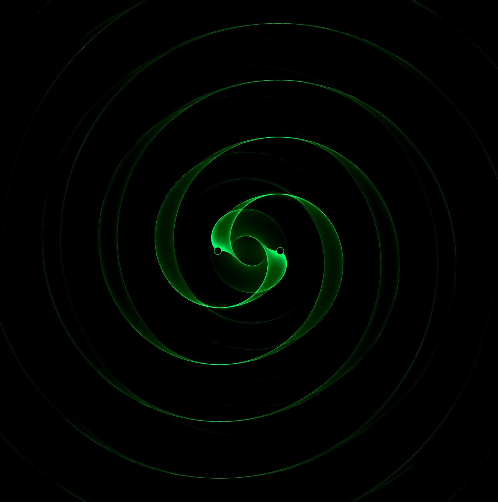
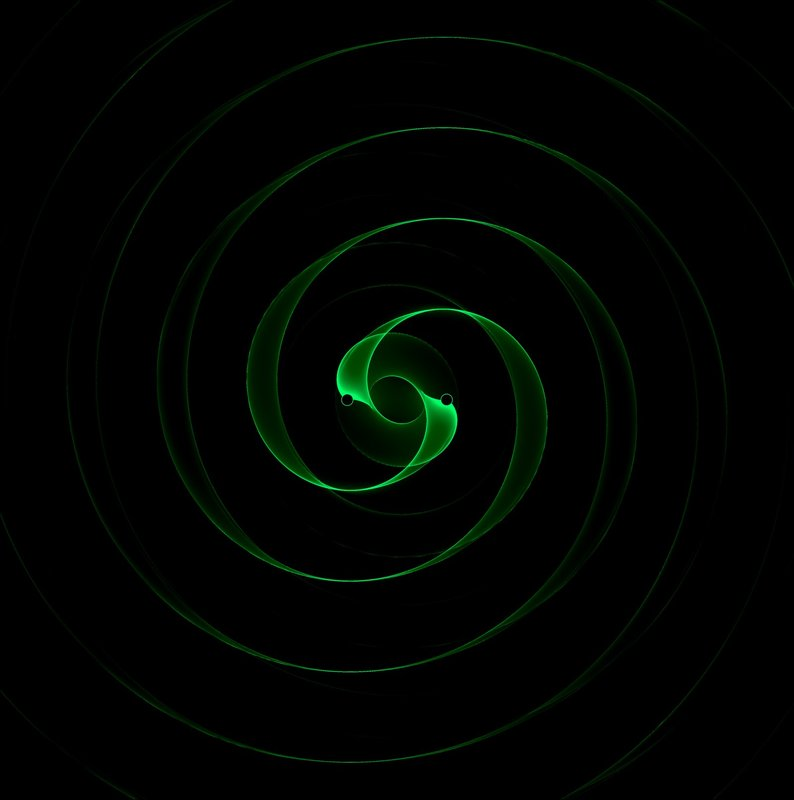

I simulate the gas around merging black holes, and work out what it does to the gravitational waves we'll detect.
Supermassive black hole binaries do not merge in vacuum. They spiral together inside accretion disks, and that gas leaves fingerprints — on the orbit, on the light we see, and on the gravitational waveform itself. My work is about predicting those fingerprints precisely enough to be useful when LISA flies.
Retrograde circumbinary disks lack the orbital resonances that dominate prograde systems, so they behave in fundamentally different ways: no cleared cavity, direct gas flow onto the binary, and shocked structures between the black holes. They may be nearly as common as prograde disks — and far less studied.
When gravitational wave emission overtakes viscous evolution, the binary decouples from its disk and races to merger. What the gas does during that final phase determines whether there is an electromagnetic counterpart — and what it looks like.
A stellar-mass black hole spiralling into a supermassive one passes through hot, radiatively inefficient gas. Linear perturbation theory of the resulting wake gives the migration torque, and from it the accumulated phase shift LISA might measure.
Moving-mesh and GPU-accelerated finite volume simulation of accretion flows, using Sailfish and AthenaK on HPC clusters. Long integrations, careful shock capturing, and the diagnostics needed to trust the result.
Figures and movies from simulations. [Replace these placeholders with your own — instructions in README.md]


I'm a postdoctoral researcher at the Institute of Science and Technology Austria, working with Zoltán Haiman on circumbinary disk dynamics and gravitational wave source modelling.
I completed my PhD at the Niels Bohr Institute, University of Copenhagen, with earlier study at NUI Maynooth. My work sits at the intersection of computational hydrodynamics and gravitational wave astrophysics: simulating the gas flows around merging black holes, and translating those simulations into predictions for LISA and for electromagnetic surveys.
Day to day that means Python, C++, and a lot of time on HPC clusters. I'm Irish, currently based just outside Vienna.